16 Introduction to SPSS & Data Preparation
16.1 Overview
This document is intended to introduce you to a couple of things. First, we will review SPSS’s GUI1 and how data are prepared and handled therein. We will import a set of rather clean data that we will use to demonstrate ways to further prepare and manipulate data.
Second, we will then introduce some common data exploration functions to understand these data better. We will use this opportunity to further consider some of the concepts we’re covering through our other class activities, including normality and outliers.
16.2 Orientation to SPSS
16.2.1 Accessing SPSS Through Apporto
SPSS can be accessed online with your CUNY ID through Apporto—as long as “your browser” is Chrome.
To access SPSS through Apporto:
- Go to CUNY’s Apporto login page: https://cuny.apporto.com/
- Enter your CUNY login credentials (your
@login.cuny.edu“email” address) - If you don’t already see an icon for SPSS, in the Apporto home page, click on the
App Storebutton in the top, left corner, just below the hamburger icon that opens up that left-hand menu. - Click to Launch SPSS and follow any steps to “optimize2” and reconnect.
To open data in Apporto, there are two ways:
1, Uploading files via dialogue
- Locate the menu bar immediately above the Apporto window:

- Click on the
File uploadbutton () - Follow the dialogue therein
2, Dragging files into the Apporto window
- Open up a file manager outside of the Apporto environment (i.e., in a normal window outside the browser in which Apporto is running)
- Left click to grab and drag a data file from your file manager into the Apporto window. Apporto will open a notification window letting you know that the file has indeed been imported; it should also now appear in the Apporto window
- You can then drag the file from Apporto window into the SPSS window that is itself inside Apporto3
Files you save in Apporto will (at least eventually) appear in either the This PC > Desktop folder (accessible from the Desktop folder under Quick Access in Windows’ native file manager) or in the This PC > Documents folder (Documents under Quick Access).
Clicking on the Settings gear to the right of the Apporto menu bar gives the option to access USBs, although this proved to not always be reliable for all OSs for me.
To export files from Apporto:
- In that menu bar immediately above the Apporto window:
- Click on the
File downloadbutton () - You get the idea
Alternatively, you can open your email from within Apporto and send it to yourself as an attachment.
16.2.2 Editing Global Options
Before we dive into the windows and workings of SPSS, I’d like to note that there are a few useful options to consider modifying given your needs. There are, in fact, many options for tailor SPSS’s functioning, output, and performance given throughout its dialogues and within its rather large list of syntax commands. Here, however, we will simply note a few “global” options that can be set to adjust how SPSS acts in general.
To access these, select Edit > Options from the menu (in any window). When that dialogue opens, you will see many choices, including the Variable Lists section in the top right oft the General tab. In that section, you can choose to either have SPSS default to Display names or to Display labels of variables. As discussed further below, a given variable can be identified by either the shorter, more-restricted name or by the longer label used to describe it. By choosing one of these option you can either show smaller, less-intuitive names or longer, more explanatory labels in (nearly) all of the output SPSS generates. Of course, you can also switch between these as needed.
Some of the other options under the General tab are worth considering (such as whether you want to have SPSS display No scientific notation for small numbers in tables; I mean, we’re doing research here, not science). The Language, Viewer, Data, Currency, Charts, Scipts, and Syntax Editor tabs are less useful for most users, but the items in the Output tab’s Outline Labeling section may also be worth considering. Either of those options can let you choose whether to show only the variable names, labels, or both; I suggest using Labels for output you share with others, but you may want to use Names for your own analyses since it will make for simpler output.
Under the Pivot Tables tab, you may want to consider changing the TagbleLook to APA_TimesRoma_12pt when you’re ready to produce pivot tables for your dissertation or publishable manuscripts.
File Locations can be nice to change if you store your data and analyses in dedicated folders.
Finally, you may (or may not) wish to change settings in the Privacy tab.
There is more one can do to customize SPSS output and set defaults that allow for automatic APA styling. Including:
- Using an APA-formatted table to serve as the style for subsequent tables
- Styling a given table using
Format >TableLooks - Styling figures
16.2.3 SPSS Windows
SPSS is inherently a syntax-driven program, but its popularity is arguably due in large part to its useful GUI. The GUI has three main windows:
- The
Data Editorwhich is comprised of theData ViewandVariable Viewtabs - The
Outputwindow - The
Syntax Editorwindow
The Data Editor Window
The Data Editor window is the one most commonly used to interface with SPSS. I think one reason for this is that is can help to be looking at one’s data while working with it—if nothing else to remember what variables there are and what their names are.
Another reason, though, is because you will have one Data Editor window for each data set you have open; when you access the drop-down menu at the top to, e.g., Analyze your data, SPSS will assume you want to work with the data in whatever window is either currently raised or that was last raised. So, if you have more than one data set open, simply cycle through to the one you want to work with and then choose what you want to be from the drop-down menu—from either the Data Editor, Output, or even Syntax window.
Relatedly, you will notice that the drop-down menu at the top is the same4 for all of the windows. This indeed means that you don’t have to cycle back to the Data Edtior window before you do anything. In fact, it can be sometimes easier top use the menu from the Output window so you can look at the results of one command to know what to do with the next. (Anyway, you can see the whole list of variables accessible to a given command in that command’s dialogue boxes.)
The Data View Tab
The Data View tab5 presents a spreadsheet of the data. Just like other spreadsheet programs, you can enter, edit, and scroll through your data here. You can use the Page up and Page Down or the arrow keys to scroll. Holding down the Control/Command button while tapping arrow keys will go to the ends of the data; e.g., Control/Command + \(\Downarrow\) will go to the bottom of the data set; Control/Command + \(\Rightarrow\) will go to far right of it, etc. One way this works differently from, e.g., Excel though is that SPSS will skip over empty cells whereas Excel will stop right before each empty cell instead of going all the way to the end.
Right-clicking on things in the Data View tab lets you do some useful things.
- Right-clicking on a column header (i.e., the part at the top that list the variable name) lets you:
- Sort the entire data set by that variable
- Copy the variable name or label (more about those things under
Variable View) Clearthe data set of that variable. This is the command to delete something in SPSS. Right-clicking and then choosingClearwill delete the selected cell, row, or column in either theData VieworVariable viewtab.- Get
Variable Informationincluding the variable’s name, label, type6, any codes for missing values, and the measurement scale for that or any other variable. - Send a command to give a nice set of descriptive statistics to the
Outputwindow (and go there automatically to see those results)
- Right-clicking on a row number lets you:
CutorCopythat rowClear(i.e., delete) that rowInsert Casesto manually enter a new row of data (or paste one that you said to cut or copy)
- Right-clicking on a cell lets you:
CutorCopythe values in that cellPastevalues selected from cutting or copying- You can also
Paste with Variable Names, useful (or confusing) for pasting into a different column
- You can also
Copythe variable name or label- Access
Variable InformationorDescriptive Statisticsfor that entire variable Clear(i.e., delete) the information in that cell- Check the spelling against SPSS’s dictionary
- Change the font slightly
The Variable View Tab
The Variable View presents what is essentially, a codebook, a list of the variables and information about them, including:
Name,- the name that SPSS uses to access that variable. These are best kept short so that you can see the whole thing in some of SPSS’s unnecessarily-small dialogues. They also can only contain letters, numbers, periods, and underscores.
Type- indicates whether the variable is a
String(alphanumeric),Numeric(numbers not specially formatted), or a number with various types of special formatting, such as dates, currency, etc. TheCommaandDottypes are for numbers with thousands etc. indicated by commas or dots, respectively7.Scientific notationis for numbers formatted like 1 \(\times\) 103 to denote 1,000. Clicking on the button with an ellipsis opens a dialogue where you can change the number type (as well as change the length of the variable—how many characters long it can be).
- indicates whether the variable is a
Width,- which simply indicates how many characters long or how many digits a variable has left of a decimal. No big deal
Decimals- presents how many decimal places a (numeric) has been assigned.
Label- is very useful. In this field you can write a rather long description of what a given variable measures. You can use nearly any characters here to explain it well. To create or change a label, simply left-click inside that field and start typing.
Values- is also quite useful; for variables that are encoded with numbers, you can use this field to indicate what each level of the variable actually denotes. For example, if you have a Likert-style response encoded a number from 1 to 5, you can click on the ellipsis button to denote that
1=Strongly Disagree, etc. When you explore the variable with descriptives, etc. SPSS will use these value labels instead, making output considerably easier to read. We will show an example of doing this below.
- is also quite useful; for variables that are encoded with numbers, you can use this field to indicate what each level of the variable actually denotes. For example, if you have a Likert-style response encoded a number from 1 to 5, you can click on the ellipsis button to denote that
Missing- is yet another useful field. Sometimes a certain character or value will be used to denote a missing value. For example,
99orNAmay be used a place-holders to signify that that datum is actually missing. By clicking on the ellipsis button, you can denote this. We do this below.
- is yet another useful field. Sometimes a certain character or value will be used to denote a missing value. For example,
Columns- simply notes how many characters wide a column is. You can change the value here or, under the
Data Viewtab, left-click the space between two rows to change this.
- simply notes how many characters wide a column is. You can change the value here or, under the
Align- just indicates the left, right, or center alignment of a column.
Measure- is an unexpectedly important attribute of a variable. SPSS is quite finicky about the “measure” type of a variable: You can only perform actions on a variable that match that variable type. For example, you can only run correlations on continuous variables. The measurement types that SPSS allows are:
Scaledenotes a “scalar” variable, which corresponds to either of Steven’s “interval” or “ratio” levels. It is indicated by a little ruler ().Ordinaldenotes a, well, ordinal variable and is indicated by a little histogram (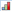).Nominaldenotes a nominal variable is is indicated by a cute little Venn diagram ().
Role- is a rather under-utilized field. It can be used to indicate whether a variable is a predictor / independent variable (
Input), a outcome / dependent variable (Target),Both, or whether it is used toPartitionorSplitthe data set. We will create a variable that indeed partitions when we subset the data to only include migrant students.
- is a rather under-utilized field. It can be used to indicate whether a variable is a predictor / independent variable (
The Output Window
Another reason I think SPSS is so widely used is because, with just a few mouse clicks, it delivers copious amounts of output. As I noted in class, personally I’ve found that some researchers use this output to determine their analyses, assuming that if some stat program spits it out, it must be good. Nonetheless, it can be good—and certainly makes it worth annotating the output.
Annotating Output
The Output window is comprised of two sections, an outline and a main window. The information in either can be changed or added to manually. This can be a good idea. First, of course, because SPSS does return a lot of results and sifting through even a few sets of analyses can be tedious.
Second, I strongly recommend taking notes on what you are doing in your analyses and what your thoughts on them are. With data and analyses of any real size and complexity, it can be difficult to jump back in to your analyses even a week or so later; steps that seemed obvious and important at the time can quickly become obscure and lost.
Ways of annotating your output:
- Insert a heading in the outline by clicking
Insert > New Heading. This will create a new heading at the cursor; double-click on this heading to type in a phrase that will remind you of what you are doing in that section of the output.- Alternatively, you can simply double-click on an existing heading to change it. For example, if you conduct more than one t-test output, you can double click on the first to change it to
t-test of toca.pro by groupand the second tot-test of toca.dis by group. You can left-click and drag the spacer between the windows to make the outline section wider, but you’ll still not want to make the headings too long since they’ll quickly become longer than a useful outline window.
- Alternatively, you can simply double-click on an existing heading to change it. For example, if you conduct more than one t-test output, you can double click on the first to change it to
- Insert notes into the output itself by clicking
Insert > New Text. This will create a text box in the output section into which you can write pretty much whatever you want. Unlike a heading, this can be as long as you want to give yourself and your colleagues as much information about what you are doing and what it means. - You can use the
Insertmenu to insert other things, too, including whole titles for the output, images, etc.
Note that you can also double-click on any element in the main output section to manipulate that element. This way, you can modify the colors, fonts, or even the text within tables, figures, etc.
Of course, you can then save your output (to a .spv file) as notes on your analyses.
Exporting Output
Right-clicking on an element lets you copy it to then paste it into, e.g., your manuscript (as we will do in Chapter 3: Writing Results).
Alternatively, you can Export an element. When you right-click on an element and choose to do that, you will be able to export it as a .html, .pdf, .ppt, .doc, etc. For importing into, e.g., Word, I suggest exporting as an .html file.
Syntax in Output
SPSS is a powerful stats program, but I personally think that its GUI is a big reason for its success. Nonetheless, SPSS’s GUI is in fact just an “overlay” that just lets us access its most common commands more intuitively; SPSS is in fact running the syntax that those mouse clicks created.
SPSS versions 27 and earlier return the syntax it used to generate results in the Output window by default right above the given results8. As of version 28, it does not. We can set SPSS to automatically return the syntax used in the output by going to Edit > Options > Viewer and then checking the Display commands in the log box in the lower-left of that Viewer window9.
Why do this? Because there are several ways in which the syntax that SPSS posts can be quite useful. First, you can copy that syntax into the Syntax Editor (as noted below) to rerun any analyses. This is useful when you are returning to analyses later on and, e.g., want to generate a smaller set of analyses.
Second, as you learn what SPSS can do, you can use the syntax to learn better how to do it—and how to tweak your analyses to get exactly the output you want. Reviewing existing syntax is a lot easier than learning it from scratch.
Third, once you’ve gained some facility using SPSS, you will find that there are things you want to do that you can’t through the GUI. Instead, you will need to do things directly withe the syntax. Although you certainly can type syntax directly into the Syntax Editor, it’s often easier to paste in existing syntax and edit it as needed. In fact, in the long run, that’s also faster.
Fourth, you can annotate syntax a bit like you can annotate output. This way, you can create and save a syntax file (saved as a .sps file) that’s a lot smaller and easier to navigate through than some massive output file—and still be able to generate that mountain of results with a few quick keystrokes10.
The Sytnax Window
SPSS doesn’t open a Syntax window automatically, like it does a Date Editor or Output window, but simply clicking File > New > Syntax opens one. We will demonstrate using it below, but the general way to use it is to either paste in or type some syntax command and, with the cursor in some part of that syntax, either click on the big, green play button11 or type Control/Command + R.
SPSS syntax itself follows a set grammar. Some command is given first; often this is immediately followed by a “statement” that just tells SPSS what variables, etc. to run that command on. This is followed by one or more options, for example whether to print out both figures and tables based on the command. Critically, each command must end with a period.
As you might expect, SPSS has many commands to choose from; more are available if you pay them more (and have your own copy of SPSS; this won’t work with the version we have access to through CUNY).
16.3 Data Preparation & Cleaning
This section will use selections for the publicly-available data from the University of North Carolina at Chapel Hill’s National Longitudinal Study of Adolescent to Adult Health (Add Health) study (stored on the University of Michigan’s ICPSR repository). This study “is a longitudinal study of a nationally representative sample of over 20,000 adolescents who were in grades 7-12 during the 1994-95 school year, and have been followed for five waves to date, most recently in 2016-18. Over the years, Add Health has collected rich demographic, social, familial, behavioral, psycho social, cognitive, and health survey data from participants and their parents … [including] data from participants’ schools, neighborhoods … and in-home physical and biological data.”
Please access that the selection of data we will use here from:
After downloading that set of data, please upload them into SPSS (e.g., via Apporto, Section 16.2.1).
These data are indeed nearly ready for further analyses, but have a few issues to address to demonstrate how to clean or improve data in ways that are commonly needed.
16.3.1 Change AID to nominal
The AID variable is right now a Scale variable; it is a number after all. And it’s not uncommon for SPSS to import IDs as numbers since replacing names with numbers is a very typical way to anonymize participants. And leaving it as a number (a Scale level Measure) won’t likely create any problems in SPSS12, but it still presents a good opportunity to demonstrate changing the Measure of a variable. To do this:
- Go to the
Variable Viewtab of theData Editorwindow. - Left-click on the
Measurecell in theAIDvariable’s row. When you do, a drop-down menu will appear listing the three measure levels. - Select to make
AIDaNominalvariable.
Now, SPSS will “understand” that this is in fact a name that signifies each participants and should be treated as such in all analyses.
16.3.2 Creating a Variable Label for AID
Continuing to prepare AID, let’s now give it a variable label. SPSS requires that variable names (in the Names column) be relatively brief13 and only use certain characters14. In fact, it’s often good to keep them short since too-long variable names can be hard to read in the tiny windows SPSS uses for most dialogues15.
Variable labels (in the Label column) can be much longer16 and contain many more types of characters17. They do not work well in the SPSS dialogues, but are often great for tables and figures.
To add a label to AID simply:
- Single-left click in the
Labelcell forAID, and type/paste:Unique Participant IDor something like that.
16.3.3 Recoding Bio_Sex
Participants’ self-reported biological sex18 is currently coded as 1 for male and 2 for female. I prefer to code dichotomous variables as 0/1.
To recode Bio_Sex:
- Click on
Transform > Recode into Same Variables...19. - In the dialogue box that opens, move
Bio_Sexto the right-hand field; to do this: - Single left-click on
Bio_Sexelecting it in the left-hand field to select it - Click on the arrow between the two fields ()
Bio_Sexshould now appear in the right-hand field:
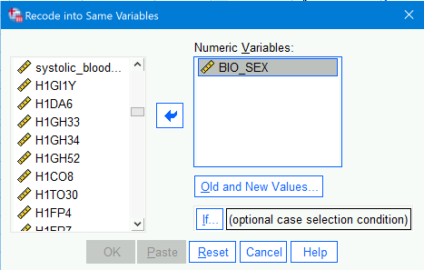- Click on
Old and New Values... - Under the
Old Valuesection, type1in theValuefield; underNew Value, type0; then clickAdd. UnderOld -> New, you should now see1 -> 0. - Now, under the
Old Valuesection, type2in theValuefield; underNew Value, type1; then clickAdd. UnderOld -> Newand clickAddto add that as well to theOld -> Newfield:
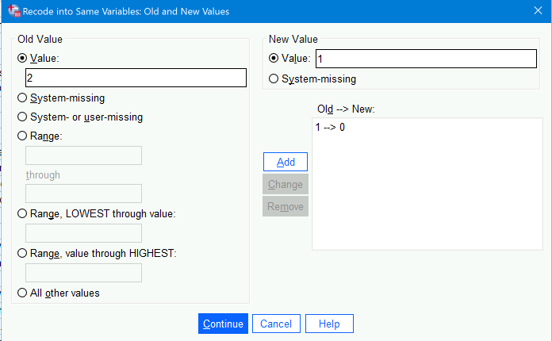 - Click
Continue; you will be taken back to the originalRecode into Same Variablesdialogue where you can clickOKto complete this.
16.3.4 Setting Values labels for Bio_Sex
In addition to giving a more human-friendly label to a variable, we can give clearer labels to the levels of a variable. These can also be shown in figures and tables, making those easier to understand and helping avoid misinterpretation.
- Also in the
Variable Viewof theData Editor, click on theValuescell in the theBio_Sexrow. - Click on the ellipsis button that appears.
- In the dialogue box that opens, enter a
0in theValuesfield. - Click the large plus sign to the right of the
Value Labelsfield:

- Type
Malein theLabelfield. - Click the plus sign again.
0andMalenow appear in the field next to the Add button, and an other row below that has appeared. - In that second row, type a
1in theValuesfield andFemalein theLabelfield:
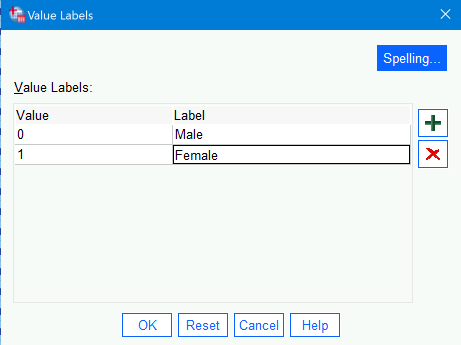 - Again click the
Addbutton to add this association as well. - Click
OK
Now when you click on the values cell for the Bio_Sex row, you will see these value labels added. Right-clicking on the Bio_Sex row and choosing to look at the Variable Information will show these in addition to the other information:
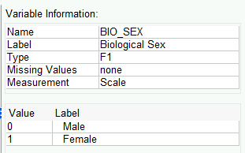
Note that we have not actually changed the data. They are still numbers (Scale level measures). Right-click again on that variable (in either the Data View or Variable View tabs) and select Descriptive Statistics. You will see in the output that SPSS generates means, etc. just as it would for any interval/ratio variable:
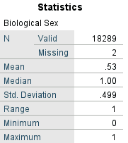
However, now in the drop-down menu click on Analyze > Descriptive Statistics > Frequencies and you will see that the level values are replaced with the more explanatory value labels, helping us (and out colleagues and readers) more easily see what the responses really meant:
16.3.5 Computing Participant Age
H1GI1Y is the last two digits of the participant’s birth year. Study_year contains the year in which a given row of longitudinal data were collected20 We can use those to compute their age at each wave.
- Click
Transform > Compute Variable. - In the dialogue box that opens, type
Agein theTarget Variable:field; this will be the name of the variable we’re computing. - In the
Numeric Expression:field, type:Study_year - (1900 + Birth_year). You can also select and move over each of these variables from the list to the left so you don’t have to type them. (You can also use the “keypad” just below theNumeric Expression:field, but that’s very cumbersome except for functions you don’t know the name or format of.)
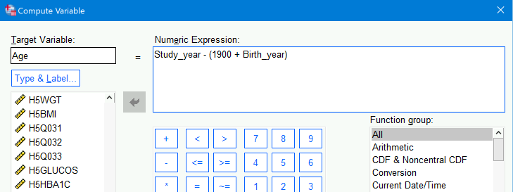 - Click
OKto finish.
16.3.6 Setting missing values for Weight
As mentioned briefly above, we can set certain values to be recognized as representing missing values. Most of the variables in this set were imported with blank cells denoting missing values or missing values already established. However, running descriptives^[Again, you can either right-click on that variable in the Data Editor and select Descriptive Statistics21 on Weight shows that the maximum weight (in kgs) here is 9999. Since your momma was not a participant, that value is surely intended to denote missing values.
We can easily fix this:
- In the
Variable Viewtab of theData Editorwindow, click on the the ellipsis button in theMissingcell of theWeightrow - Click on the radio button next to
Discrete missing values - In the first field under that, type in
9999 - Click
OK
16.3.7 Create Dummy Variables for Different Dwelling_Types
I am a pretty strong advocate for using dummy variables. They can make it easier to interpret the effects of each level of a nominal variable without needing to resort to, e.g., post hoc analyses.
Dwelling_Type is coded right now as a numeric variable. Clicking on the ellipsis button in the Values column for that variable presents the following definitions for the values:
| Value | Label |
|---|---|
| 1 | (1) Detached single-family house |
| 2 | (2) Mobile Home/trailer |
| 3 | (3) Single-family row/town house (2 or more attached units) |
| 4 | (4) Divided house |
| 5 | (5) Small apartment building (2-4 units) |
| 6 | (6) Apt building (5 or more units)/free access to housing un[it] |
| 7 | (7) Apt building (5 or more units)/locked entry/doorman/both |
| 8 | (8) Other |
We could leave this as single variable; for ANOVAs this may help since then we would only look for differences between these levels if the ANVOA found a significant main effect for this variable22. However, it is more flexible and efficient for other types of models to convert these levels into meaningful dummy variables that can be added as needed. (By not necessarily including all levels—all dummies—we could also save a few degrees of freedom, too.)
Quickly Creating Dummy Variables for Variable Levels
We could simply convert each level into a separate dummy variable. To do this:
- Under the
Transformmenu, selectCreate Dummy Variables - Select
Dwelling_TypeunderVariablesand then add that to theCreate Cummy Variables for:field by again clicking on the arrow () - We are going to create a simple dummy variable—not, e.g., one derived from a combination of other variables—so leave
Create main-effect dummiesselected - It’s fine to leave selected
Use value labelsunderDummy Variable Labelssince neither choice matters for a simple “main effect” dummies - Under
Macros, select toOmit first dummy category from macro definitions. We can nearly always select to do this because we usually need one fewer dummy variables than there are values in the original variable. ThePopulationvariables has two values (MigrantandNon-Migrant), so we only need one dummy variable (i.e., 2 - 1 = 1) to fully encode the information in thePopulationvariable23
This will makeDetached single-familythe “reference” group: If we included all of the dummy variables we’re creating in a model, then their effects would be relative to those living in single-family detached homes. - In the
Root Namesfield, typeDwelling. This will add that word to the each of the dummy variables to remind us where they came from and what they’re referring to. - Click
OK
Dummy variables can only take on the values of 0 or 1. For some reason, SPSS gives dummies it creates two decimal places. We clearly don’t need these, so:
- In the
Variable Viewtab, click into theDecimalscell of thepopulation_1variable24 - Change the value to
0
Note that we could also change to Width to 1 since we only need one digit to the left of the decimal.
Creating Dummy Variables for Combined Variable Levels
Some of these dwelling types are quite similar to each other; for at least preliminary analyses, then, we will combine some of them into the same dummy variable25
We could group these several ways, of course, but let’s group them thusly:
Detached_House:1if the variable value is1, else it will be0Mobile_or_RowHouse:1if the variable value is either2or3, else0MultiUnit_Housing:1if the value is4–7, else0Other_Dwelling:1if the value =8, else0
We will do this by using an other type of data transformation. This process is not as straight-forward as a batch creation of the dummies, but still not onerous. It’s also useful for many other types of transformations—not just into dummy variables:
- Under the
Transformmenu, selectCompute Variable - In the
Target Variablebox, typeDetached_House - In the
Numeric Expressionbox, type:(Dwelling_Types = 1) - Click
OKto create the variable. You now have a new variableDetached_Housecoded as:1if the respondent lives in a detached single-family house0for all other types of dwellings
- Repeat Steps 1 -– 4 to create the second dummy variable, using:
- For
Target VariabletypeMobile_or_RowHouse - For
Numeric Expressiontype(Dwelling_Types = 2 OR Dwelling_Types = 3)
This variable will equal: - 1 if the respondent lives in a mobile home/trailer or a row/town house
- 0 otherwise
- For
- Now repeat Steps 1 –- 4 again to create the third dummy variable, using:
- For
Target VariabletypeMultiUnit_Housing - For
Numeric Expressiontype(Dwelling_Types >= 4 AND Dwelling_Types <= 7)
This captures all multi-unit dwellings: - Divided house
- Small apartment buildings
- Larger apartments with or without doormen / locked entries
- For
- One more time, repeat to create the final dummy:
- For
Target VariabletypeOther_Dwelling - For
Numeric Expressiontype(Dwelling_Types = 8)
This dummy equals 1 only if the dwelling type is coded asOther
- For
After creating the variables, go to Variable View to create variable labels and perhaps labels for the levels.
16.3.8 Transform an Old Variable into a New One
It’s often necessary or useful to create a new variable based on the values of one or more existing variables. For example, we may want to recode a variable or to compute an overall score.
A common reason to recode variables is to “reverse” score them—switch the direction of the values so they match either what is more intuitive or to work better with other variables in your data. In other words, to change the values like this:
| Participant’s Response | Original Values | New Values |
|---|---|---|
| Most/all of the time | 0 | 3 |
| A lot of the time | 1 | 2 |
| Sometimes | 2 | 1 |
| Never/rarely | 3 | 0 |
Among the variables selected from the Add Health data are a series that ask about the participants feelings during the past week. The prompts follow this template:
“How often was each of the following things true during the past seven days?: You were ______.”
Most of these items ask about negative emotions/affects, things like feeling sad or lonely. A few, however, ask about positive emotions/affects.
Right now, the position-affect items are scored like the Original Values in Table 16.1, just above. This allowed us to create the Overall_Negative_Affect score, which is simply the average of all of a participant’s responses to those items; higher numbers on this variable denote more negative emotions/affects. Since the positive affect items are part of this score, it was easiest to have them coded in the opposite direction from the negative affect items; the Overall_Negative_Affect score thus represents both more negative affects and fewer positive ones.
It may also be useful to create an Overall_Positive_Affect score—and to code it so that higher values denote more positive affect. One way to do this would be to first reverse score those positive affect items and then to compute an overall score for them.
Recode Variables
We will reverse score the positive affect items near the end of the Add Health dataset26.
- Click on
Transform > Recode into Different Variables...27 - In the dialogue that opens, move
Happy,Enjoyed_Life,Just_as_Good, andHopefulto theNumeric Variable -> Output Variablefield. - Left-click on the first row in the
Numeric Variable -> Output Variablefield, thus selectingHappy --> ?. - In the
Output Variablesection just to the right, typeHappy_Reversedin theNamefield and—if you want—How Often Felt HAPPY Past Week - Reverse Scoredin theLabelfield. Click theChangebutton under those fields in theOutput Variablesection.
The first row in theNumeric Variable -> Output Variablefield now shows thatHappyis going to be recoded into a newHappy_Reversedvariable:
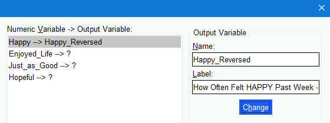 - Now select the
Enjoyed_Life --> ?and typeEnjoyed_Life_Reversedin theNamefield,How Often ENJOYED LIFE Past Week - Reverse Scoredin theLabelfield before again clicking theChangebutton.
Continue with creating aJust_as_Good_Reversed(lebeledHow Often Felt JUST AS GOOD AS OTHER PEOPLE Past Week - Reverse Scored) andHopeful_Reversed(labeledHow Often Felt HOPEFUL ABOUT THE FUTURE Past Week - Reverse Scored) variables. - Now, click on the
Old and New Valuesbutton underneath theNumeric Variable -> Output Variablefield section. - In the dialogue that opens, type
0in theValuefield in theOld Valuesection and3in theValuefield in theNew Variablesection. Next, click theAddbutton in theOld --> New:section under the theNew Variablesection.0 --< 3will now appear in there:
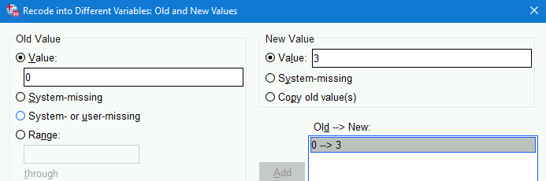 - Continue setting up the recoding by adding
1 --> 2,2 --> 1, and3 --> 3into theOld --> New:section. - To ensure any other values are addressed (e.g.,
999for missing values), click theAll other valuesradio button at the bottom of theOld Valuesection and theSystem missingbutton in theNew Valuesection;Addthat as well to theOld --> New:section:
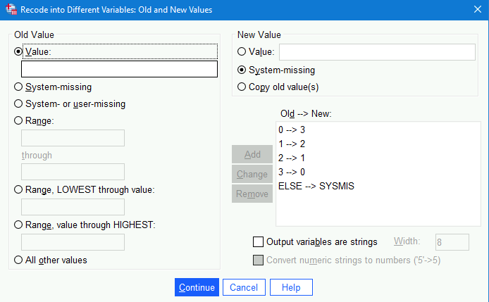. - Click
Continueand thenOKin the original dialogue box.
Note that the variables are created as nominal. This won’t affect the score computation in 16.3.8.2, but will need to be changed for proper analyses otherwise.
Compute an Overall Score
We will compute an Overall_Positive_Affect score from those four variables we just created. We will compute it from the average of those four variables, however we could instead sum them. Taking the average, though, keeps the score on the same scale as the variables that comprise it, which can make interpreting and comparing them easier. (Of course, standardizing them all does that even better.)
- Click on
Transform > Compute Variable. - Type
Overall_Positive_Affectin theTarget Variablefield in the top left of the dialogue that opens. - Under the
Functions and Special Variablessection in the bottom right of that dialogue, click onMean. - Next, click on the “up” arrow () next to that section.
MEAN(?,?)will now appear in theNumeric Expression:field at the top:
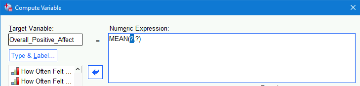- Select
Happy_Reversedfrom the list of variables and click on the right arrow to add that where the first?appears in theMean(?,?)formula. - Next, add
Enjoyed_Life_Reversedto the formula.
Note that the values within the parentheses of theMean(?,?)formula need to be separated by commas, so make sure there is a comma separating it fromHappy_Reversed. - Continue to add
Just_as_Good_ReversedandHopeful_Reversedto the formula, ensuring that commas separate each28.:
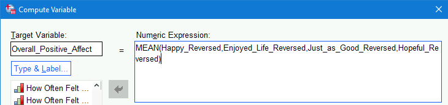 - Click
OKto finish.
16.4 Export a Table in APA Format to Word
To export a table in APA format in SPSS, you can use the following steps. This process involves generating the table, modifying it to meet APA style guidelines, and then exporting it.
16.4.1 Steps to Export a Table in APA Format in SPSS:
- Generate the Table:
- First, create the table you need by running the appropriate analysis.
- For example, to create a descriptive statistics table, go to
Analyze>Descriptive Statistics>Descriptives..., select the variables, and run the analysis.
- Modify the Table:
- Once the table is generated, it will appear in the
Output Viewer. - To modify the table, double-click on it to open it in the
Pivot Table Editor. - Adjust the table’s appearance to match APA style as closely as possible. This might include:
- Ensuring that the table uses a simple grid with minimal lines.
- Aligning text correctly (typically left-aligned for text, right-aligned for numbers).
- Using appropriate font and size (Times New Roman, 12-point is common for APA).
- Including relevant statistics (e.g., means, standard deviations).
- Once the table is generated, it will appear in the
- Export the Table:
- After making the necessary adjustments, you can export the table.
- Click on
File>Export...in theOutput Viewer. - In the
Export Outputdialog box, choose the desired file format. For APA tables, Microsoft Word (.doc or .docx) is typically a good choice. - Specify the file name and location where you want to save the file.
- Under
Objects to Export, selectAll Visible Objectsor choose the specific table you modified. - Click
OKto export the table.
16.4.2 Example Export in Word:
- Open the Exported File:
- Open the exported Word document.
- Review the table to ensure it adheres to APA formatting guidelines.
- Adjust in Word if Necessary:
- If further adjustments are needed, you can make them directly in Word.
- Ensure the table is labeled correctly with a table number and title (e.g.,
Table 1). - Include any notes below the table, formatted according to APA guidelines.
16.4.3 Summary
To export a table in APA format from SPSS, generate the table through the appropriate analysis, modify it using the Pivot Table Editor to adhere to APA style, and then export it to a Word document. Make any final adjustments in Word to ensure the table fully complies with APA formatting standards.
16.5 Additional Resources
- Supplemental materials from Polit & Beck (2017)
16.5.1 Standardize Variables
I’m a big fan of standardized data. It doesn’t change the distribution of scores at all but makes values on one variable directly comparable to values on an other—even if they’re measured on very different scales29
SPSS makes it very easy to standardize variables:
- Click on
Anlayze > Descriptive Statistics > Descriptives - Click on
Waist_Circum - Now, holding down the
Shiftkey either single-(left-)click onEBVor tap the down-arrow key until you have selected all of the variables fromWaist_CircumtoEBV - Now click on the blue arrow to move all of those variables to the
varialbe(s)field - Under the
Optionsdialogue, we might as well check to review, e.g., theMean,Std. Deviation,Minimum,Maximum, andS. E. Mean(i.e., the standard error of the mean that we covered in our first lecture) - But our real goal here is to check the
Save standardized values as variablesbefore clicking onOK
And that’s all it takes to create standardized variables. They will now all appear at the end of the dataset. The variable names will be like the original, prepending with a Z, e.g., Waist_Circum becomes ZWaist_Circum.
“Graphical user interface”↩︎
Because following all of the steps they already laid out for you could not be optimal.↩︎
You can load it from the Apporto file system via, e.g.,
This PC > Desktop, but files don’t immediately appear there (needing connection refreshes?), so simply dragging it into the SPSS Data Editor window seems most reliable to me.↩︎Well, actually the
Syntaxwindow has a few extra menu items related to running syntax and accessing additional extensions.↩︎The tabs are at the bottom left of the window.↩︎
This “type” is given as either the letter (
AorF) or word (DATE,TIME,PCT(for percent),DOLLAR, etc.) followed by a number. AnAmeans that it is a string variable (i.e.,Alphanumeric), and anFmeans it’s a number (an “F” is used for esoteric reasons). The number presents the number of digits possible before and after the decimal point; if the value has no decimal (e.g.,F4), then that variable has no decimals.↩︎I.e.,
Commais for numbers formatted like 1,000.00 andDotis for numbers formatted like 1.000,00↩︎The syntax is posted under
Logheadings in the outline. This is useful for finding it, but the log is also used by SPSS to report errors and warnings, so it can be a little confusing to find to the syntax or even know that errors/warnings were generated.↩︎We can also turn on outputting syntax with syntax:
SET PRINTBACK LISTING.turns it on, andSET PRINTBACK NONE.turns it off.↩︎Control/Command+Ato select all of the syntax in the window, and thenControl/Command+Rto run it all.↩︎I.e., this button: ↩︎
As we’ll discuss briefly in the measurement class, interval and ratio variables—those that SPSS calls
Scalevariables—can be analyzed in more ways than ordinal variables; ordinal, in turn, can be analyzed in more ways than nominal.↩︎SPSS variable names can be up to 64 characters long.↩︎
SPSS variable names can include letters, numbers, periods, and underscores (
_). They must also begin with a letter.↩︎We can change whether we see variable names or labels in dialogues via
Edit > Options; under theGeneraltab, go to theVariable Listssection near the top left; there, select eitherDisplay labelsorDisplay names.↩︎SPSS variable labels can be up to 256 characters long.↩︎
SPSS variable labels can contain nearly any printable character including spaces, punctuation, and even emojis. 😫!↩︎
Here coded simply as female and male, ignoring intersex, androgen insensitive, etc.↩︎
We can instead choose to
Recode into Different Variables...if we want to retain the original variable and the way it’s coded.↩︎Many variables were not linked to a single year and are the same for a given participant—a given AID—across all years, i.e., are the same for every row for that AID.↩︎
Or go to
Analyze > Descriptive Statistics > Descriptivesin the drop-down menu.↩︎Remember that ANOVAs conduct an “omnibus” F-test to first find if there is any significant difference anywhere between the levels. We then conduct post hoc analyses to investigate where those differences are.↩︎
Note that SPSS may create two variables anyway. I’m not sure why it does this, but we can simply delete (
Clear) the one with thePopulation=Non-Migrantlabel since we’ll only work with the migrant students.↩︎Or whichever is the dummy with the
Population=Migrantlabel that we’ll be keeping.↩︎Of course, if it later turned out that this combined dummy variable was important to unpack we easily could by then creating separate dummies for them.↩︎
We could also reverse code by subtracting the variable from a constant. Here, we could subtract from 3. This would make an initial
2into 3 –2=1, etc.
Often, though, we want the numbers to range from1to the maximum. In htat case, we subtract the variable from 1 greater than the max value. If, e.g., instead we had variables that ranged from1to4, we could reverse code them by subtracting from 5:
5 –1=4
5 –2=3
5 –3=2
5 –4=1.↩︎You may
Recode into Same Variables...—and sometimes I do—but this can be dangerous if you make a mistake or tedious if you decide you want the original scaling back. Recoding into a different variable also makes it clearer that you indeed did just that in case you come back later and don’t quite remember if you did or not.↩︎You can also simply type into that
Numberic Expression:field, so here you can simply paste this into that field:
MEAN(Happy_Reversed,Enjoyed_Life_Reversed,Just_as_Good_Reversed,Hopeful_Reversed)↩︎In analytic models—if all variables are either standardized or dummy-coded—it also lets us remove the intercept term, making our analyses a bit more powerful … but more on that in Stat 2.↩︎